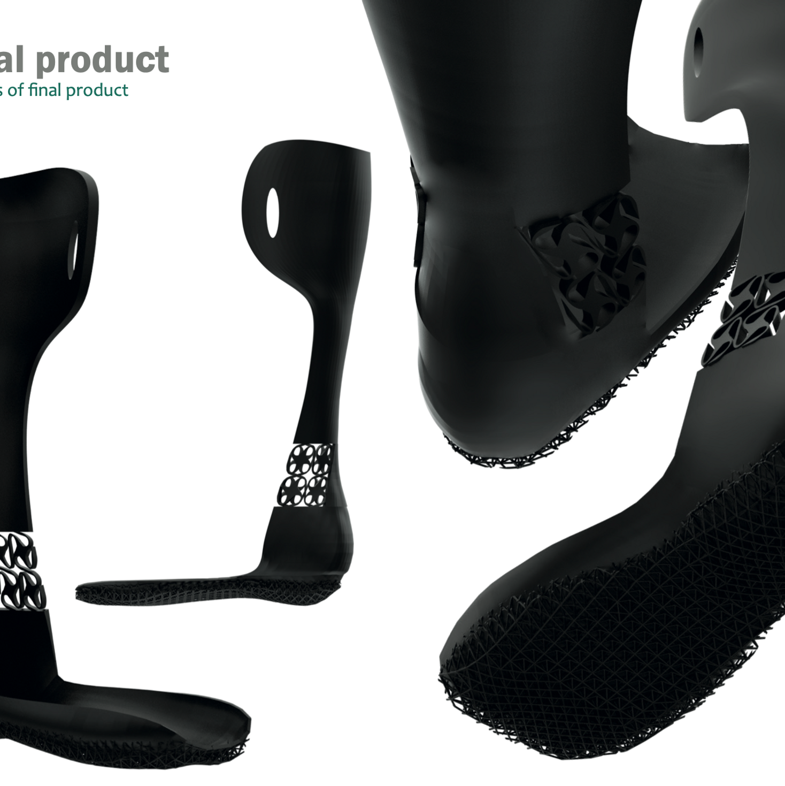

Application of mechanical metamaterials in a parametric, 3D printed ankle foot orthosis#
Authors: Your Name
Last Edited: 2023-07-15
Created: April 28, 2023 4:05 PM
Authors: van Leijsen, P.M.
Categories: Graduation Project
Supervisors: Doubrovski, E.L. (mentor), Wu, J. (graduation committee)
URL: https://repository.tudelft.nl/islandora/object/uuid%3A656fd81e-98fd-460f-8a14-e90483c78b1c

Abstract#
During this project the possibilities of enriching the functionality of an Ankle Foot Orthosis (AFO) by implementing mechanical metamaterials are researched. The project is executed for Buchrnhornen, a company based in Eindhoven which has over 70 years of experience in manufacturing orthopaedic shoes and orthosis in a traditional way. Mechanical metamaterials are artificial structures with mechanical properties defined by their structure rather than their composition. They consist of rationally designed unit cells with unique mechanical properties. The project focusses on replacing the hinges and stops used in a traditional AFO to block plantar or dorsal flexion by a mechanical metamaterial structure which could achieve the same mechanical functioning. A digital program in Grasshopper (Rhino plug-in) is developed which generates a design space based on an input scan of the patients lower leg. The design space is split up in different parts based on the mechanical requirements of the specific areas in the AFO. For each design space, a suitable topology infill which meets the mechanical requirement of the area is developed and generated. Through an input which can be defined per generated model, mechanical requirements can be customized per patient. The output of the digital program is a ready to 3D print .stl file. An extensive research on 3D print methods and materials is done in order to find the most suitable method to fabricate the generated model. The best option was found in a Composite Fibre Co-extrusion (CFC) printer which is able to implement carbon fibre in a model. The addition of carbon fibre ensures much stronger prints which are able to resist the high forces which are applied on the AFO. The project is finished with a conceptual model generated through the developed digital program as well as an extensive evaluation and advice on the researched print methods and topologies. To conclude the research, a list of generic findings and recommendations for further development within Buchrnhornen is provided.